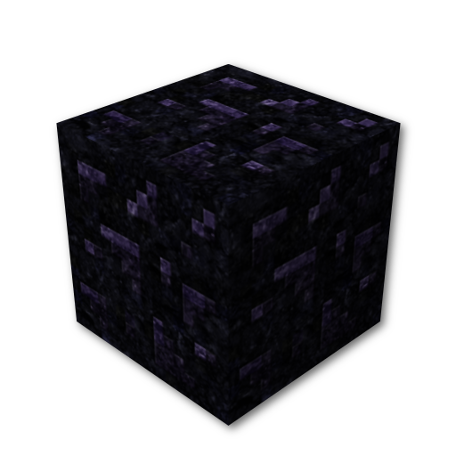
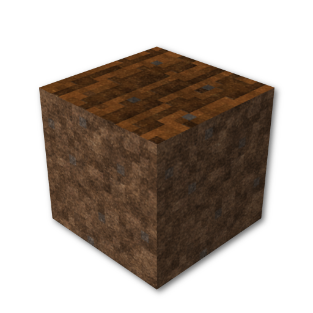

What is Civcraft?
Civcraft is a unique Minecraft server where the players make the rules. It's an experiment for communities, political ideologies, debate and discussion. Most Minecraft servers have rules, like "no griefing", "no stealing", or "be nice". Civcraft doesn't. However, that doesn't mean you can run wild throughout the world, pillaging and plundering all that you come across, because Civcraft isn't an ordinary vanilla Minecraft server. We have a collection of plugins that encourages co-operation between players by increasing Minecraft's base difficulty tenfold and puts players in control of justice.
The Mods
{kind=link}
Citadel lets you protect blocks from other players through a system called 'reinforcement'. To reinforce a block, type '/ctr' and right-click the block you want to protect while holding Smooth Stone, an Iron Ingot, or a Diamond. The item will disappear, and the block will be reinforced. When a block is reinforced, other players have to break it multiple times to actually destroy it—the number of breaks depends on reinforcement material. Stone is 25, Iron 250, and Diamond 1800. Thus, protection is possible but not impenetrable. But how do you know who breaks your chest or burns your house?

JukeAlert is the answer. Jukeboxes have been repurposed as the equivalent of security cameras. Anything someone does while whithin eleven blocks of a jukebox you've reinforced will be logged on it, and can be read by looking at the jukebox (we call them 'snitches' by the way) and typing '/jainfo'. Snitches will also tell you in chat whenever someone enters their range. Of course, it doesn't do any good to know who did something if you can't stop them.
{kind=link}
PrisonPearl makes it so players can imprison each other (called 'pearling') in The End. Kill someone with an ender pearl in your hotbar and they'll be stuck in The End and tied to the pearl. Destroying the pearl releases them. Remember that someone can do this to you, and usually will if you attack them, grief their buildings, or steal their items.
RealisticBiomes makes farming harder by limiting growth rates of crops and making them only grow well in certain biomes. Crops on Civcraft are important because regular experience gain is disabled and crops are the only way to produce it; this is done in conjunction with another plugin: FactoryMod.
FactoryMod is the primary way we encourage capital investment and discourage hermiting; it enhances and expands the tech tree through 'factories': structures that let you produce more of an item, cheaper, but for a significant upfront factory-creation price. They also let you produce experience from crops such as wheat, carrots, cactus, and mob drops. Even though you can produce more from raw materials using factories, it's actually harder than vanilla minecraft, largely due to RealisticBiomes and our custom map. The details get pretty complicated, but there's a guide here.
The Map
The Civcraft world generation is noticeably different from vanilla, with beautiful new biomes, hell islands instead of the Nether and majestic, enormous mountains. More importantly, there is a striking dissimilarity between our ore distribution and that of Minecraft: regular-size ore veins are 1/6 as common and sometimes you will find large pancake-shaped areas with amazing ore density, usually one or two-hundred blocks in diameter; these are what we refer to as 'veins'.
Getting Started
Before logging on, there are a few things you should probably know and do. You should check out our join page for information on how to access the Minecraft server and our Mumble server. You should also familiarize yourself with our rules and in game commands. So, come join! Stay awhile, stay forever.